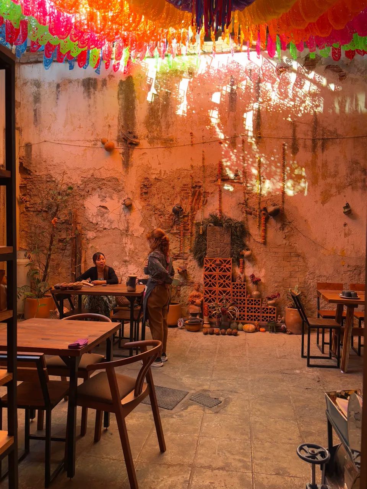
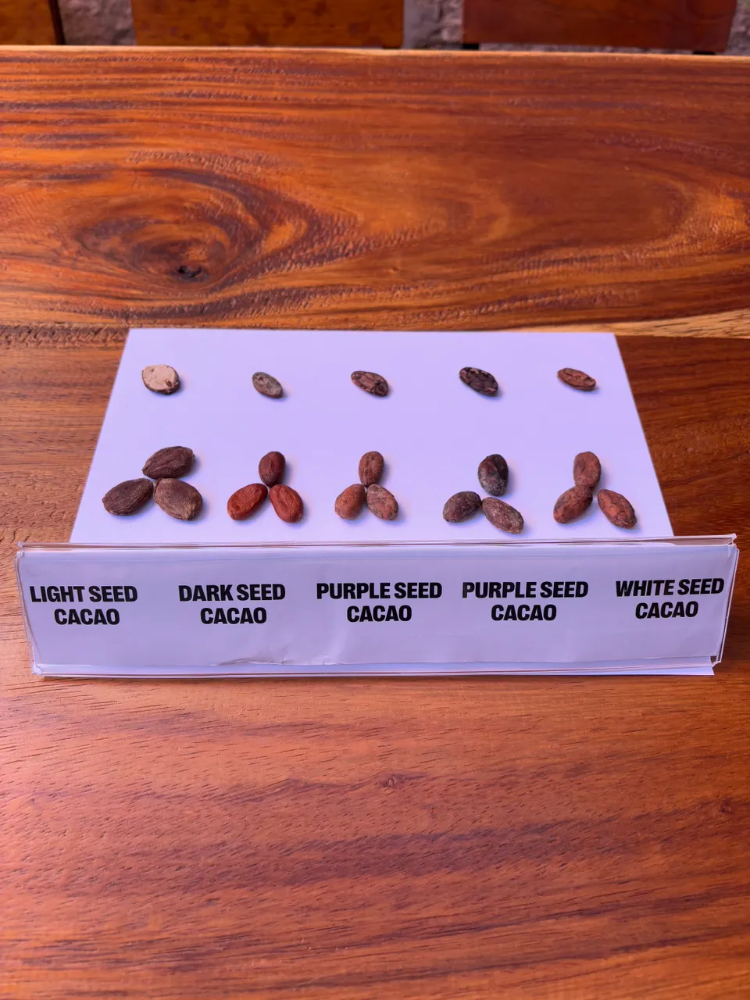

Adiós cafeína, hola cacao
"Theobroma cacao" es el nombre original de la planta de cacao y, en griego, significa “alimento de los dioses”. Este grano divino, del que podemos extraer un caldo celestial, últimamente compite en fama con el café de especialidad y con el té matcha.


Nosotros hemos hecho lo propio en Oaxaca, donde tuvimos la oportunidad de conocer todos los detalles sobre el cacao puro –desde la raíz hasta la taza– gracias a las experiencias que organiza Chimalapa Cacao, un proyecto independiente que promueve la cultura, historia y tradición del cacao oaxaqueño.